Code
library(tidyverse)
library(tidycensus)
library(sf)
library(caret)
Sys.getenv("CENSUS_API_KEY") != "" # should print TRUE[1] TRUEMUSA 5080 · Integrates Weeks 1–5 · Due Friday, October 16
In this report, we will be creating a Model to predict the percentage of households in Philadelphia who do not own a car. We first draw census data from the 2023 ACS, and then pull in spatial data from OpenDataPhilly to address spatial clustering concerns. Finally, we transform our features using logs, squares, and categories to capture non-linear trends. Through each step we assess and compare the CV RMSE to find the model with the lowest residuals.
library(tidyverse)
library(tidycensus)
library(sf)
library(caret)
Sys.getenv("CENSUS_API_KEY") != "" # should print TRUE[1] TRUEThis function runs 10-fold cross-validation with the same seed every time, so every model in the log is tested on the same folds.
ctrl <- trainControl(method = "cv", number = 10)
cv_rmse <- function(formula, data) {
df <- if (inherits(data, "sf")) st_drop_geometry(data) else data
vars <- all.vars(formula)
bad <- vars[sapply(vars, function(v) any(is.na(df[[v]])))]
if (length(bad) > 0) {
stop("These variables have NAs: ", paste(bad, collapse = ", "),
". Fill them or choose another variable (Rule 1: don't drop rows).")
}
set.seed(5080)
fit <- train(formula, data = df, method = "lm", trControl = ctrl)
fit$results$RMSE
}Every time we create a new model, we add a row.
model_log <- tibble(
model = character(),
added = character(),
cv_rmse = numeric(),
notes = character()
)Choose three to five ACS predictors for your baseline model. They should be things that plausibly relate to your outcome, but none of them may be built from your outcome (Rule 3).
vars <- load_variables(2023, "acs5")
philly_tracts <- get_acs(
geography = "tract",
state = "PA",
county = "Philadelphia",
variables = c( # universe #
total_pop = "B01003_001", # people
# your outcome's numerator and denominator (or median), e.g.:
no_veh = "B08201_002", # households
# your baseline predictors, e.g.:
totalHH = "B08201_001", # households
medinc = "B07011_001", # people
under18 = "C18108_002", # people
under64 = "C18108_006", # people
over65 = "C18108_010", # people
familyHH = "B11001_002", # households
aloneHH = "B11001_008", # households
occ_units = "B25003_001", # housing units
renter_occ = "B25003_003", # housing units
edu_total = "B15003_001", # people >25yrs
ba = "B15003_022", # people >25yrs
ma = "B15003_023", # people >25yrs
prof = "B15003_024", # people >25yrs
phd = "B15003_025" # people >25yrs
),
year = 2023,
output = "wide",
geometry = TRUE
) %>%
st_transform(2272)
|
| | 0%
|
|= | 1%
|
|== | 3%
|
|=== | 4%
|
|=== | 5%
|
|==== | 6%
|
|===== | 7%
|
|===== | 8%
|
|====== | 9%
|
|======= | 9%
|
|======= | 10%
|
|========= | 12%
|
|========== | 14%
|
|========== | 15%
|
|=========== | 16%
|
|============ | 17%
|
|============ | 18%
|
|============== | 20%
|
|============== | 21%
|
|=============== | 22%
|
|================ | 23%
|
|================ | 24%
|
|================= | 25%
|
|================== | 26%
|
|=================== | 27%
|
|=================== | 28%
|
|==================== | 29%
|
|===================== | 30%
|
|====================== | 31%
|
|======================= | 32%
|
|======================= | 33%
|
|======================== | 34%
|
|========================= | 35%
|
|========================= | 36%
|
|========================== | 37%
|
|=========================== | 38%
|
|=========================== | 39%
|
|============================ | 40%
|
|============================= | 41%
|
|============================== | 42%
|
|============================== | 43%
|
|=============================== | 44%
|
|================================ | 45%
|
|================================ | 46%
|
|================================= | 47%
|
|================================== | 48%
|
|================================== | 49%
|
|=================================== | 50%
|
|==================================== | 51%
|
|==================================== | 52%
|
|===================================== | 53%
|
|====================================== | 54%
|
|======================================= | 55%
|
|======================================= | 56%
|
|======================================== | 57%
|
|========================================= | 59%
|
|========================================== | 60%
|
|=========================================== | 61%
|
|=========================================== | 62%
|
|============================================ | 63%
|
|============================================= | 64%
|
|============================================= | 65%
|
|============================================== | 66%
|
|=============================================== | 67%
|
|=============================================== | 68%
|
|================================================ | 69%
|
|================================================= | 70%
|
|================================================= | 71%
|
|================================================== | 72%
|
|=================================================== | 73%
|
|==================================================== | 74%
|
|==================================================== | 75%
|
|===================================================== | 76%
|
|====================================================== | 77%
|
|====================================================== | 78%
|
|======================================================= | 79%
|
|======================================================== | 80%
|
|======================================================== | 81%
|
|========================================================= | 82%
|
|========================================================== | 83%
|
|========================================================== | 84%
|
|=========================================================== | 85%
|
|============================================================ | 86%
|
|============================================================= | 87%
|
|============================================================== | 88%
|
|============================================================== | 89%
|
|=============================================================== | 90%
|
|================================================================ | 91%
|
|================================================================= | 92%
|
|================================================================= | 93%
|
|================================================================== | 94%
|
|=================================================================== | 95%
|
|=================================================================== | 96%
|
|==================================================================== | 97%
|
|===================================================================== | 98%
|
|===================================================================== | 99%
|
|======================================================================| 100%philly_tracts <- philly_tracts %>%
mutate(
# build your outcome, e.g. a percentage:
y = no_vehE / totalHHE * 100,
# and its reliability. For a percentage, use tidycensus::moe_prop();
# for a median or count, use the E and M columns directly.
y_moe = moe_prop(no_vehE, totalHHE,
no_vehM, totalHHM),
y_se = y_moe / 1.645,
y_cv = y_se / y * 100,
# predictors:
pct_under18 = under18E / total_popE * 100,
pct_18to64 = under64E / total_popE * 100,
pct_over65 = over65E / total_popE * 100,
pct_familyHH = familyHHE / totalHHE * 100,
pct_aloneHH = aloneHHE / totalHHE * 100,
pct_renter = renter_occE / occ_unitsE * 100,
pct_ba = (baE + maE + profE + phdE) / edu_totalE * 100
)Before we commit, we check three things.
# How many tracts have no value for your outcome?
sum(is.na(philly_tracts$y))[1] 20# How reliable is it?
summary(philly_tracts$y_cv) Min. 1st Qu. Median Mean 3rd Qu. Max. NA's
0.03572 0.17204 0.23410 Inf 0.31959 Inf 20 philly_tracts %>%
mutate(reliability = case_when(
y_cv < 0.25 ~ "High",
y_cv <= 0.5 ~ "Moderate",
TRUE ~ "Low"
)) %>%
st_drop_geometry() %>%
count(reliability) reliability n
1 High 212
2 Low 37
3 Moderate 159# What does the distribution of reliability look like?
ggplot(philly_tracts, aes(x = y_cv)) +
geom_histogram(bins = 30) +
theme_minimal()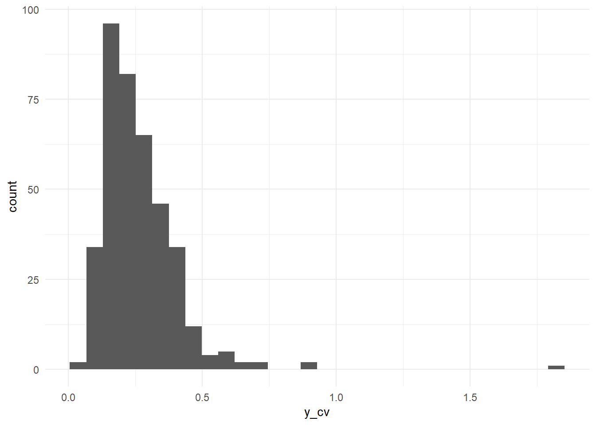
# What does the distribution of results look like?
ggplot(philly_tracts, aes(x = y)) +
geom_histogram(bins = 30) +
theme_minimal()
Using the traditional split of low (>40), moderate (12-40), and high (<12) reliability, 387 of our tracts have high reliability. When looking at the histogram of reliability, we can see why: our observations are extremely right-skewed, with the greatest density of reliability around 0-0.5. Using a traditional model to measure reliability is therefore not suitable, as we cannot create a more realistic framework for what observations would only have moderate or low reliability. Therefore, in order to capture low-moderate observations in a model, we opted to adjust the scale so that any observations below 0.25 CV are “high”, 0.25-0.5 CV are “moderate” and above 0.5 are “low”. This allowed for a more realistic spread of reliability: 212 observations are “high” , 159 are “moderate,” and 37 are “low.” Expanding our definition of unreliability is important as it will help us build a hierarchy of census tracts. Doing so will allow us to know the percentage of households in Philadelphia that do not own a car, so we can understand how to best serve them – with either public transit options or local and walkable amenities.
Here we filter once, and never again. Every later step uses tracts.
tracts <- philly_tracts %>%
filter(total_popE > 0,
!is.na(y)
# add !is.na() for each baseline predictor like in the in-class lab
)
nrow(philly_tracts)[1] 408nrow(tracts)[1] 388We lost 20 tract when filtering out estimated “no population” tracts. These are tracts such as the airport, stadium district, and parks, which contain little to no housing.
We plot our outcome against each predictor before modeling.
# one scatterplot per predictor, e.g.:
#Median income
ggplot(tracts, aes(x = medincE, y = y)) + geom_point(alpha = 0.5) +
geom_smooth(method = "lm", se = FALSE) + theme_minimal()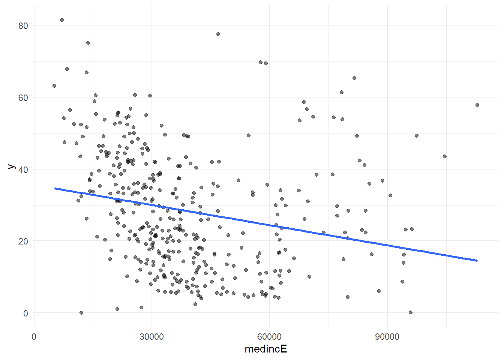
#Percent under 18
ggplot(tracts, aes(x = pct_under18, y = y)) + geom_point(alpha = 0.5) +
geom_smooth(method = "lm", se = FALSE) + theme_minimal()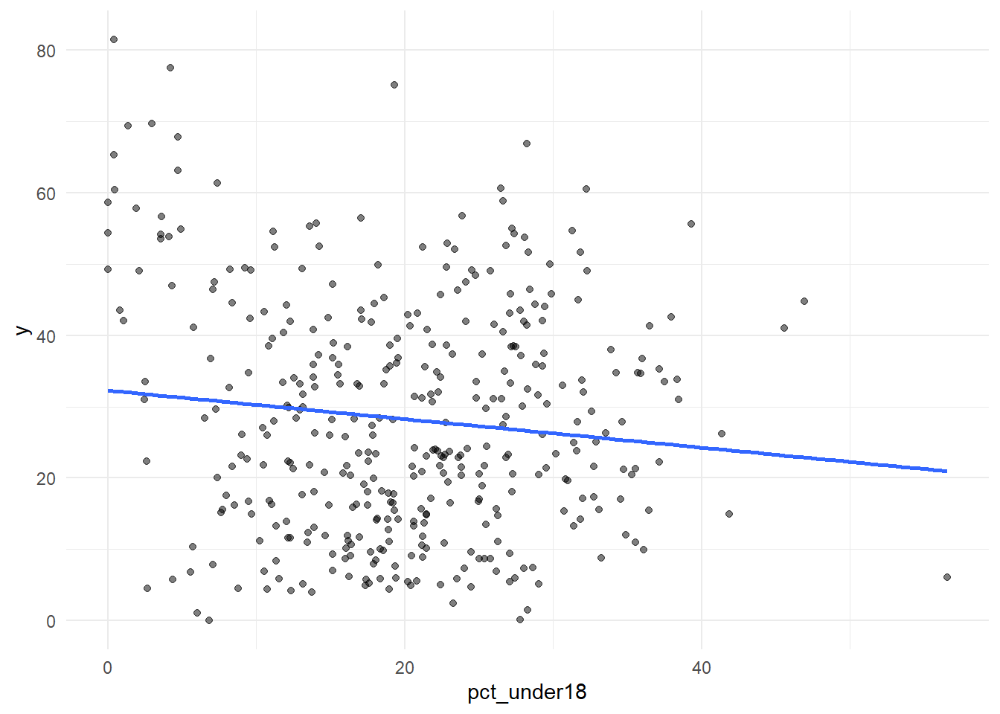
#Pct 18-64
ggplot(tracts, aes(x = pct_18to64, y = y)) + geom_point(alpha = 0.5) +
geom_smooth(method = "lm", se = FALSE) + theme_minimal()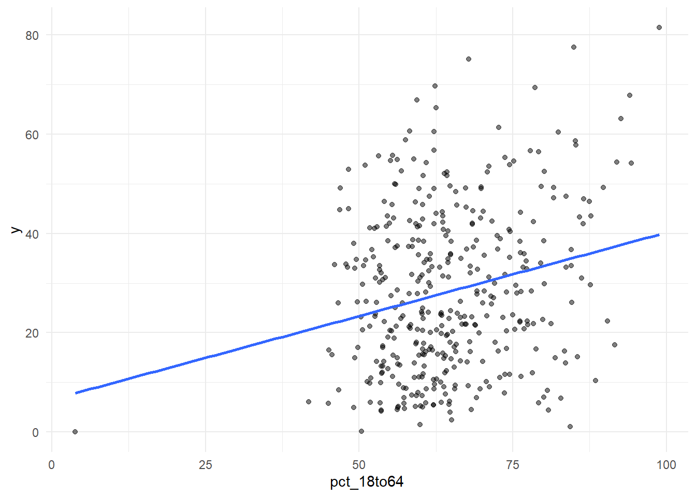
#Pct 65+
ggplot(tracts, aes(x = pct_over65, y = y)) + geom_point(alpha = 0.5) +
geom_smooth(method = "lm", se = FALSE) + theme_minimal()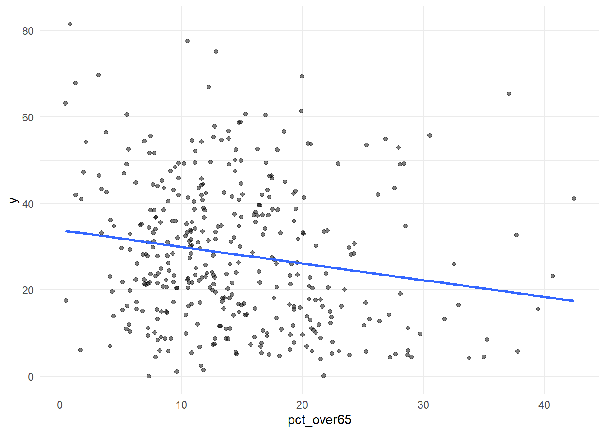
#Pct Family HH
ggplot(tracts, aes(x = pct_familyHH, y = y)) + geom_point(alpha = 0.5) +
geom_smooth(method = "lm", se = FALSE) + theme_minimal()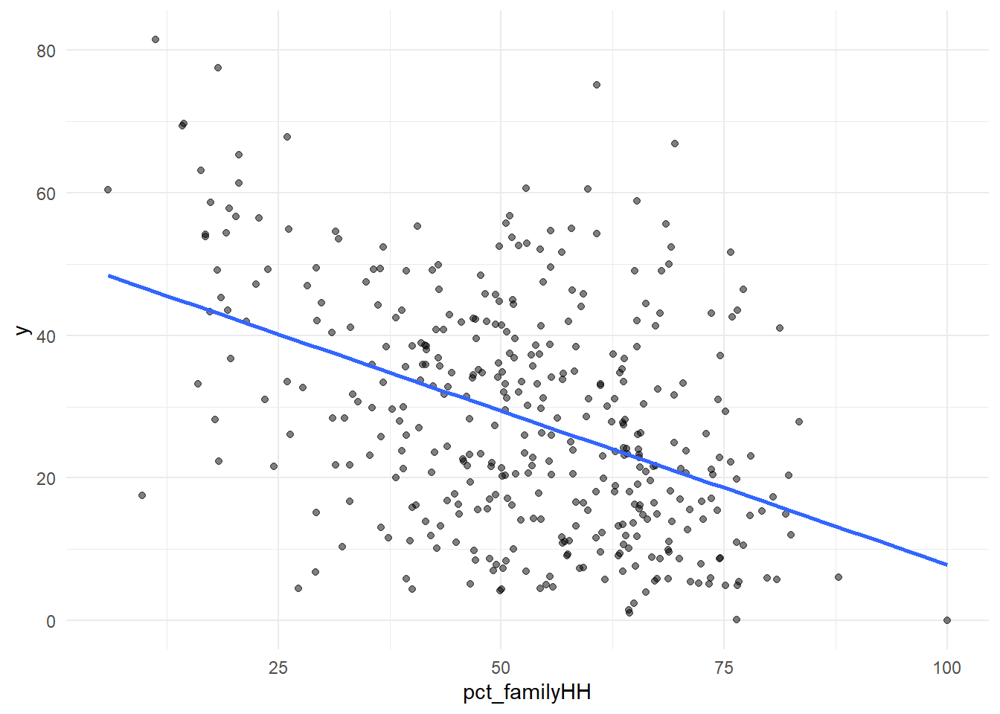
#Pct Living Alone
ggplot(tracts, aes(x = pct_aloneHH, y = y)) + geom_point(alpha = 0.5) +
geom_smooth(method = "lm", se = FALSE) + theme_minimal()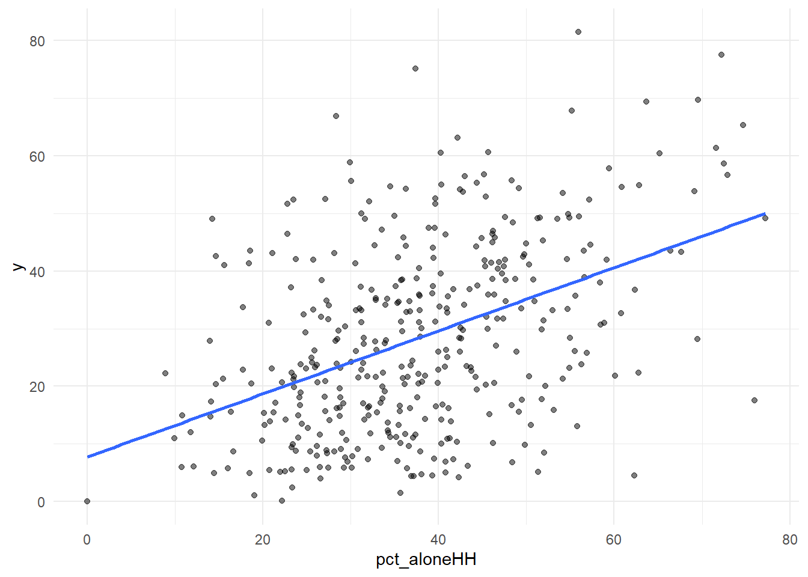
#Pct Renter
ggplot(tracts, aes(x = pct_renter, y = y)) + geom_point(alpha = 0.5) +
geom_smooth(method = "lm", se = FALSE) + theme_minimal()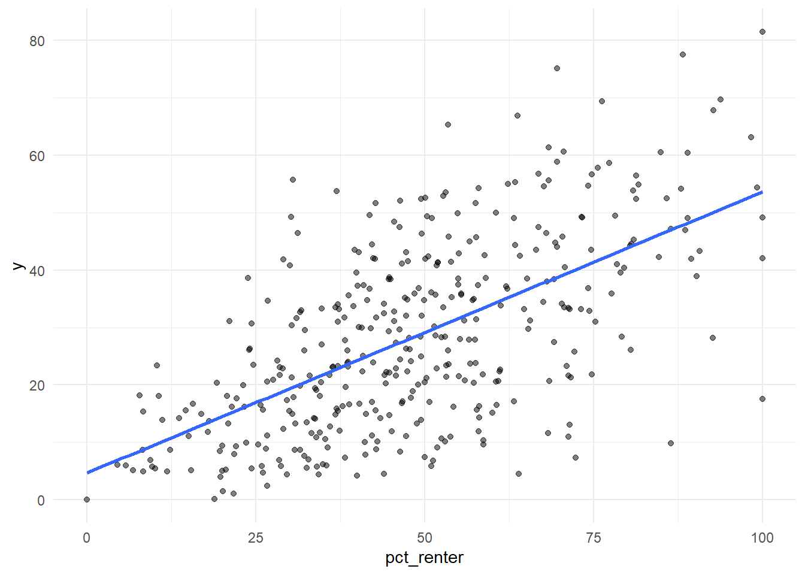
#Pct BA
ggplot(tracts, aes(x = pct_ba, y = y)) + geom_point(alpha = 0.5) +
geom_smooth(method = "lm", se = FALSE) + theme_minimal()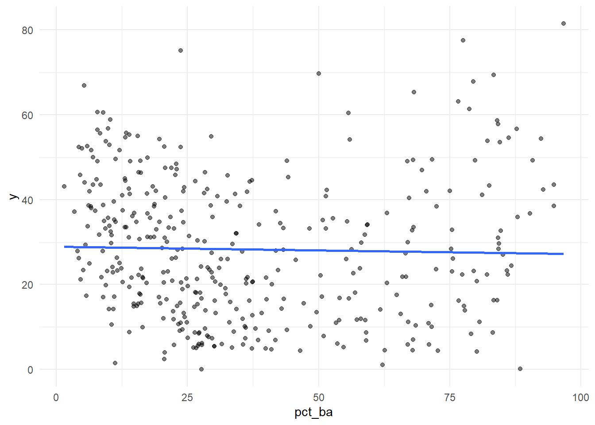
f1 <- y ~ medincE + pct_renter + pct_ba + pct_aloneHH + pct_under18
m1 <- lm(f1, data = tracts)
summary(m1)
Call:
lm(formula = f1, data = tracts)
Residuals:
Min 1Q Median 3Q Max
-38.280 -8.366 -0.707 8.320 35.575
Coefficients:
Estimate Std. Error t value Pr(>|t|)
(Intercept) -7.842e-02 4.238e+00 -0.019 0.98525
medincE -1.599e-04 5.709e-05 -2.801 0.00535 **
pct_renter 3.717e-01 3.960e-02 9.387 < 2e-16 ***
pct_ba -1.899e-02 5.298e-02 -0.358 0.72018
pct_aloneHH 3.811e-01 6.495e-02 5.867 9.62e-09 ***
pct_under18 1.566e-01 1.006e-01 1.556 0.12058
---
Signif. codes: 0 '***' 0.001 '**' 0.01 '*' 0.05 '.' 0.1 ' ' 1
Residual standard error: 12.14 on 382 degrees of freedom
Multiple R-squared: 0.4555, Adjusted R-squared: 0.4484
F-statistic: 63.92 on 5 and 382 DF, p-value: < 2.2e-16model_log <- model_log %>%
add_row(model = "m1", added = "ACS baseline",
cv_rmse = cv_rmse(f1, tracts),
notes = "baseline")
model_log# A tibble: 1 × 4
model added cv_rmse notes
<chr> <chr> <dbl> <chr>
1 m1 ACS baseline 12.2 baselineOn tracts it hasn’t seen, the baseline model misses by about 12 percentage points
tracts <- tracts %>% mutate(resid_m1 = residuals(m1))
ggplot(tracts) +
geom_sf(aes(fill = resid_m1), color = NA) +
scale_fill_gradient2(low = "#2166ac", mid = "grey95", high = "#b2182b", midpoint = 0) +
theme_void() +
labs(title = "Baseline model: where it's wrong",
subtitle = "Red = actual higher than predicted",
fill = "Residual")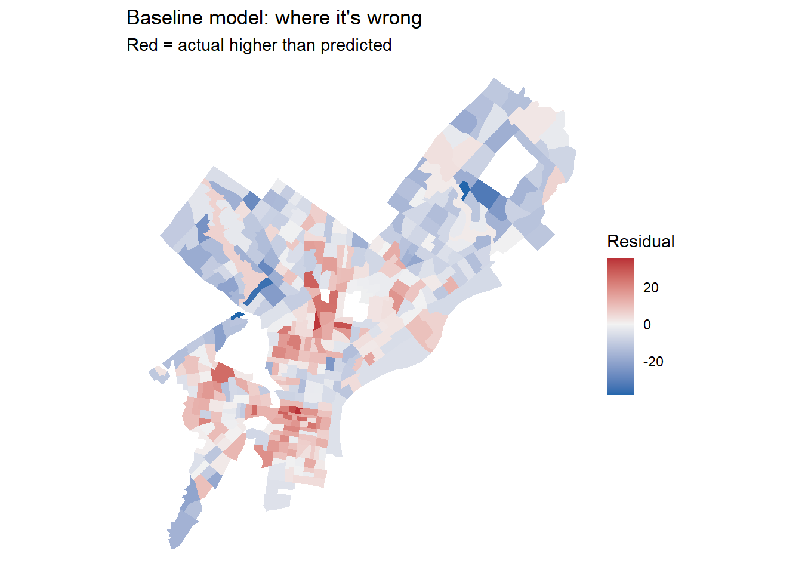
Our model seems to under-predict in Center City and the North and over-predict in the Northwest and Northeast. This could be since we did not account for alternative modes of transportation.
First, Center City and its surrounding neighborhoods are the most well-serviced areas in the City (such as the Broad Street Line); on the other hand, the latter are the most car-dependent. We might therefore see less car usage in areas with highest density.To also account for areas with potentially low density, but high ridership, we can also look at ridership rates
Similarly, proximity to Indego stations may also give another viable option for transportation other than SEPTA. These are mostly concentrating in and around Center City and so we could expect usage of them to be associated with reduced car ownership.
We could look at the density of intersections. Shorter blocks, such as those in Center City and South Philadelphia, could indicate an area being more walkable and therefore less likely to need to own a car. On the other hand, longer blocks, such as those in the periphery of the city, could pose a barrier to walking and therefore encourage car ownership.
Finally, the ability to actually park a car – tallied in the number of available parking permits – could also be an unaccounted for factor.
Many of the city’s datasets on OpenDataPhilly are served through a Carto SQL API. You send a SQL query in a URL, and it sends back data. Ask for format=GeoJSON and st_read() reads the result directly, just like the Indego feed in Week 4.
The pattern:
https://phl.carto.com/api/v2/sql?format=GeoJSON&q=SELECT ... FROM table_name WHERE ...Three pieces of SQL we rely on:
SELECT the_geom, column1, column2 chooses which columns come back. Always include the_geom, or you get no geometry.FROM table_name chooses the dataset.WHERE ... filters rows. Filter in the query, not in R. Some tables have millions of rows, and pulling everything will be slow or fail.carto_get <- function(sql) {
url <- paste0("https://phl.carto.com/api/v2/sql?format=GeoJSON&q=", URLencode(sql))
st_read(url, quiet = TRUE)
}#Regional Rail Outbound and Weekday Ridership 2017-2024
region_rail_ridership <- st_read("https://hub.arcgis.com/api/v3/datasets/281807e0099f461c8ae3db9ef4347970_0/downloads/data?format=geojson&spatialRefId=4326&where=1%3D1") %>%
st_transform(st_crs(tracts)) %>%
filter(Service_Ty == "Weekday") %>%
filter(Direction == "Outbound") %>%
filter(Year < 2024)Reading layer `Regional_Rail_Station_Summary' from data source
`https://hub.arcgis.com/api/v3/datasets/281807e0099f461c8ae3db9ef4347970_0/downloads/data?format=geojson&spatialRefId=4326&where=1%3D1'
using driver `GeoJSON'
Simple feature collection with 5235 features and 12 fields
Geometry type: POINT
Dimension: XY
Bounding box: xmin: -75.7627 ymin: 39.67018 xmax: -74.75399 ymax: 40.3062
Geodetic CRS: WGS 84#SEPTA Stops
septa_stops <- st_read("https://hub.arcgis.com/api/v3/datasets/b227f3ddbe3e47b4bcc7b7c65ef2cef6_0/downloads/data?format=geojson&spatialRefId=4326&where=1%3D1") %>%
st_transform(st_crs(tracts))Reading layer `Transit_Stops_(Fall_2026)' from data source
`https://hub.arcgis.com/api/v3/datasets/b227f3ddbe3e47b4bcc7b7c65ef2cef6_0/downloads/data?format=geojson&spatialRefId=4326&where=1%3D1'
using driver `GeoJSON'
Simple feature collection with 21517 features and 9 fields
Geometry type: POINT
Dimension: XY
Bounding box: xmin: -75.83469 ymin: 39.80381 xmax: -74.7542 ymax: 40.33401
Geodetic CRS: WGS 84#Indego
indego <- st_read("https://www.rideindego.com/stations/json/") %>%
st_transform(st_crs(tracts))Reading layer `OGRGeoJSON' from data source
`https://www.rideindego.com/stations/json/' using driver `GeoJSON'
Simple feature collection with 321 features and 33 fields
Geometry type: POINT
Dimension: XY
Bounding box: xmin: -75.249 ymin: 39.88994 xmax: -75.10121 ymax: 40.03807
Geodetic CRS: WGS 84#Intersections
int <- st_read("https://hub.arcgis.com/api/v3/datasets/cc0e1bfe7a3d4814a0a0329c2650c62e_0/downloads/data?format=geojson&spatialRefId=4326&where=1%3D1") %>%
st_transform(st_crs(tracts))Reading layer `Intersection_Controls' from data source
`https://hub.arcgis.com/api/v3/datasets/cc0e1bfe7a3d4814a0a0329c2650c62e_0/downloads/data?format=geojson&spatialRefId=4326&where=1%3D1'
using driver `GeoJSON'
Simple feature collection with 16992 features and 4 fields
Geometry type: POINT
Dimension: XY
Bounding box: xmin: -75.27357 ymin: 39.88108 xmax: -74.95981 ymax: 40.13769
Geodetic CRS: WGS 84#Parking Permits
parking <- st_read("https://phl.carto.com/api/v2/sql?q=SELECT+*+FROM+residential_parking_permit_blocks&filename=residential_parking_permit_blocks&format=geojson&skipfields=cartodb_id") %>%
st_transform(st_crs(tracts))Reading layer `OGRGeoJSON' from data source
`https://phl.carto.com/api/v2/sql?q=SELECT+*+FROM+residential_parking_permit_blocks&filename=residential_parking_permit_blocks&format=geojson&skipfields=cartodb_id'
using driver `GeoJSON'
Simple feature collection with 1342 features and 8 fields
Geometry type: POINT
Dimension: XY
Bounding box: xmin: -75.2634 ymin: 39.88991 xmax: -75.0709 ymax: 40.08559
Geodetic CRS: WGS 84We imported a few layers to address our concerns of missing attributes:
We build spatial features from our own layers. After each one, we fit a model, cross-validate it, and log it.
# Model 2: Regional Rail Stations - Nearest Distance to Nearest Station
tract_pts <- st_point_on_surface(tracts) # always inside the tract, unlike a centroid
nearest_idx <- st_nearest_feature(tract_pts, region_rail_ridership)
tracts <- tracts %>%
mutate(dist_rail_mi = as.numeric(
st_distance(tract_pts, region_rail_ridership[nearest_idx, ], by_element = TRUE)) / 5280)
f2 <- y ~ medincE + pct_renter + pct_ba + pct_aloneHH + pct_under18 + dist_rail_mi
m2 <- lm(f2, data = tracts)
summary(m2)
Call:
lm(formula = f2, data = tracts)
Residuals:
Min 1Q Median 3Q Max
-40.120 -7.961 -0.540 8.296 35.805
Coefficients:
Estimate Std. Error t value Pr(>|t|)
(Intercept) -1.660e+00 4.391e+00 -0.378 0.70567
medincE -1.752e-04 5.812e-05 -3.014 0.00275 **
pct_renter 3.706e-01 3.957e-02 9.366 < 2e-16 ***
pct_ba -1.231e-02 5.315e-02 -0.232 0.81696
pct_aloneHH 3.926e-01 6.543e-02 6.000 4.59e-09 ***
pct_under18 1.611e-01 1.006e-01 1.602 0.11005
dist_rail_mi 1.367e+00 1.007e+00 1.358 0.17534
---
Signif. codes: 0 '***' 0.001 '**' 0.01 '*' 0.05 '.' 0.1 ' ' 1
Residual standard error: 12.13 on 381 degrees of freedom
Multiple R-squared: 0.4582, Adjusted R-squared: 0.4496
F-statistic: 53.7 on 6 and 381 DF, p-value: < 2.2e-16model_log <- model_log %>%
add_row(model = "m2", added = "Nearest Rail Station",
cv_rmse = cv_rmse(f2, tracts),
notes = "m1 + Nearest Rail Station")
# repeat for each feature
model_log# A tibble: 2 × 4
model added cv_rmse notes
<chr> <chr> <dbl> <chr>
1 m1 ACS baseline 12.2 baseline
2 m2 Nearest Rail Station 12.2 m1 + Nearest Rail Station# Model 3: SEPTA stops - Nearest Distance to Nearest Stop
tract_pts <- st_point_on_surface(tracts) # always inside the tract, unlike a centroid
nearest_idx <- st_nearest_feature(tract_pts, septa_stops)
tracts <- tracts %>%
mutate(septa_stop_mi = as.numeric(
st_distance(tract_pts, septa_stops[nearest_idx, ], by_element = TRUE)) / 5280)
f3 <- y ~ medincE + pct_renter + pct_ba + pct_aloneHH + pct_under18 + septa_stop_mi
m3 <- lm(f3, data = tracts)
summary(m3)
Call:
lm(formula = f3, data = tracts)
Residuals:
Min 1Q Median 3Q Max
-37.007 -8.140 -0.715 8.137 34.535
Coefficients:
Estimate Std. Error t value Pr(>|t|)
(Intercept) 5.622e+00 4.133e+00 1.360 0.17455
medincE -1.445e-04 5.440e-05 -2.656 0.00823 **
pct_renter 3.358e-01 3.812e-02 8.810 < 2e-16 ***
pct_ba -2.068e-02 5.043e-02 -0.410 0.68208
pct_aloneHH 3.603e-01 6.192e-02 5.819 1.25e-08 ***
pct_under18 1.780e-01 9.587e-02 1.857 0.06407 .
septa_stop_mi -4.271e+01 6.711e+00 -6.363 5.67e-10 ***
---
Signif. codes: 0 '***' 0.001 '**' 0.01 '*' 0.05 '.' 0.1 ' ' 1
Residual standard error: 11.56 on 381 degrees of freedom
Multiple R-squared: 0.5079, Adjusted R-squared: 0.5001
F-statistic: 65.53 on 6 and 381 DF, p-value: < 2.2e-16model_log <- model_log %>%
add_row(model = "m3", added = "Nearest SEPTA Stop",
cv_rmse = cv_rmse(f3, tracts),
notes = "m1 + Nearest SEPTA Stop")
# repeat for each feature
model_log# A tibble: 3 × 4
model added cv_rmse notes
<chr> <chr> <dbl> <chr>
1 m1 ACS baseline 12.2 baseline
2 m2 Nearest Rail Station 12.2 m1 + Nearest Rail Station
3 m3 Nearest SEPTA Stop 11.6 m1 + Nearest SEPTA Stop # Model 4: All previous + SEPTA stops
f4 <- y ~ medincE + pct_renter + pct_ba + pct_aloneHH + pct_under18 + dist_rail_mi + septa_stop_mi
m4 <- lm(f4, data = tracts)
summary(m4)
Call:
lm(formula = f4, data = tracts)
Residuals:
Min 1Q Median 3Q Max
-36.852 -8.137 -0.881 8.057 34.646
Coefficients:
Estimate Std. Error t value Pr(>|t|)
(Intercept) 5.015e+00 4.324e+00 1.160 0.24686
medincE -1.499e-04 5.560e-05 -2.696 0.00732 **
pct_renter 3.358e-01 3.816e-02 8.801 < 2e-16 ***
pct_ba -1.837e-02 5.071e-02 -0.362 0.71740
pct_aloneHH 3.645e-01 6.258e-02 5.824 1.22e-08 ***
pct_under18 1.793e-01 9.600e-02 1.868 0.06252 .
dist_rail_mi 4.681e-01 9.713e-01 0.482 0.63013
septa_stop_mi -4.222e+01 6.794e+00 -6.214 1.36e-09 ***
---
Signif. codes: 0 '***' 0.001 '**' 0.01 '*' 0.05 '.' 0.1 ' ' 1
Residual standard error: 11.57 on 380 degrees of freedom
Multiple R-squared: 0.5082, Adjusted R-squared: 0.4991
F-statistic: 56.09 on 7 and 380 DF, p-value: < 2.2e-16model_log <- model_log %>%
add_row(model = "m4", added = "Nearest SEPTA Stop",
cv_rmse = cv_rmse(f4, tracts),
notes = "All previous + SEPTA stops")
# repeat for each feature
model_log# A tibble: 4 × 4
model added cv_rmse notes
<chr> <chr> <dbl> <chr>
1 m1 ACS baseline 12.2 baseline
2 m2 Nearest Rail Station 12.2 m1 + Nearest Rail Station
3 m3 Nearest SEPTA Stop 11.6 m1 + Nearest SEPTA Stop
4 m4 Nearest SEPTA Stop 11.6 All previous + SEPTA stops#Model 5: Indego Stations - Nearest Distance to Nearest Stop
tract_pts <- st_point_on_surface(tracts) # always inside the tract, unlike a centroid
nearest_idx <- st_nearest_feature(tract_pts, indego)
tracts <- tracts %>%
mutate(indego_mi = as.numeric(
st_distance(tract_pts, indego[nearest_idx, ], by_element = TRUE)) / 5280)
f5 <- y ~ medincE + pct_renter + pct_ba + pct_aloneHH + pct_under18 + indego_mi
m5 <- lm(f5, data = tracts)
summary(m5)
Call:
lm(formula = f5, data = tracts)
Residuals:
Min 1Q Median 3Q Max
-35.067 -6.896 -0.857 6.518 32.164
Coefficients:
Estimate Std. Error t value Pr(>|t|)
(Intercept) 1.390e+01 4.123e+00 3.370 0.000828 ***
medincE -1.270e-04 5.179e-05 -2.452 0.014650 *
pct_renter 3.135e-01 3.639e-02 8.614 < 2e-16 ***
pct_ba -8.196e-02 4.843e-02 -1.692 0.091391 .
pct_aloneHH 2.701e-01 5.999e-02 4.502 8.95e-06 ***
pct_under18 5.173e-02 9.179e-02 0.564 0.573342
indego_mi -2.240e+00 2.424e-01 -9.239 < 2e-16 ***
---
Signif. codes: 0 '***' 0.001 '**' 0.01 '*' 0.05 '.' 0.1 ' ' 1
Residual standard error: 10.99 on 381 degrees of freedom
Multiple R-squared: 0.5552, Adjusted R-squared: 0.5482
F-statistic: 79.26 on 6 and 381 DF, p-value: < 2.2e-16model_log <- model_log %>%
add_row(model = "m5", added = "Indego Stations",
cv_rmse = cv_rmse(f5, tracts),
notes = "m1 + Indego Stations")
# repeat for each feature
model_log# A tibble: 5 × 4
model added cv_rmse notes
<chr> <chr> <dbl> <chr>
1 m1 ACS baseline 12.2 baseline
2 m2 Nearest Rail Station 12.2 m1 + Nearest Rail Station
3 m3 Nearest SEPTA Stop 11.6 m1 + Nearest SEPTA Stop
4 m4 Nearest SEPTA Stop 11.6 All previous + SEPTA stops
5 m5 Indego Stations 11.1 m1 + Indego Stations # Model 6: All previous + Indego Stations
tract_pts <- st_point_on_surface(tracts) # always inside the tract, unlike a centroid
nearest_idx <- st_nearest_feature(tract_pts, indego)
tracts <- tracts %>%
mutate(indego_mi = as.numeric(
st_distance(tract_pts, indego[nearest_idx, ], by_element = TRUE)) / 5280)
f6 <- y ~ medincE + pct_renter + pct_ba + dist_rail_mi + pct_aloneHH + pct_under18 + septa_stop_mi + indego_mi
m6 <- lm(f6, data = tracts)
summary(m6)
Call:
lm(formula = f6, data = tracts)
Residuals:
Min 1Q Median 3Q Max
-33.596 -7.430 -0.787 6.074 32.610
Coefficients:
Estimate Std. Error t value Pr(>|t|)
(Intercept) 1.487e+01 4.174e+00 3.562 0.000415 ***
medincE -1.328e-04 5.140e-05 -2.583 0.010162 *
pct_renter 2.949e-01 3.561e-02 8.281 2.12e-15 ***
pct_ba -7.053e-02 4.729e-02 -1.492 0.136623
dist_rail_mi 1.117e+00 9.008e-01 1.239 0.215943
pct_aloneHH 2.781e-01 5.878e-02 4.730 3.17e-06 ***
pct_under18 8.171e-02 8.950e-02 0.913 0.361816
septa_stop_mi -2.877e+01 6.490e+00 -4.433 1.22e-05 ***
indego_mi -1.987e+00 2.441e-01 -8.140 5.76e-15 ***
---
Signif. codes: 0 '***' 0.001 '**' 0.01 '*' 0.05 '.' 0.1 ' ' 1
Residual standard error: 10.69 on 379 degrees of freedom
Multiple R-squared: 0.5813, Adjusted R-squared: 0.5725
F-statistic: 65.78 on 8 and 379 DF, p-value: < 2.2e-16model_log <- model_log %>%
add_row(model = "m6", added = "Indego Stations",
cv_rmse = cv_rmse(f6, tracts),
notes = "All previous + Indego Stations")
# repeat for each feature
model_log# A tibble: 6 × 4
model added cv_rmse notes
<chr> <chr> <dbl> <chr>
1 m1 ACS baseline 12.2 baseline
2 m2 Nearest Rail Station 12.2 m1 + Nearest Rail Station
3 m3 Nearest SEPTA Stop 11.6 m1 + Nearest SEPTA Stop
4 m4 Nearest SEPTA Stop 11.6 All previous + SEPTA stops
5 m5 Indego Stations 11.1 m1 + Indego Stations
6 m6 Indego Stations 10.8 All previous + Indego Stations# Model 7: Density of intersections
tracts <- tracts %>%
mutate(n_int = lengths(st_intersects(., int)))
summary(tracts$n_int) Min. 1st Qu. Median Mean 3rd Qu. Max.
3.00 31.00 42.00 42.75 54.00 106.00 tracts <- tracts %>%
mutate(
area_sqmi = as.numeric(st_area(.)) / 27878400, # sq ft in a sq mile
int_per_sqmi = n_int / area_sqmi
)
f7 <- y ~ medincE + pct_renter + pct_ba + pct_aloneHH + pct_under18 + int_per_sqmi
m7 <- lm(f7, data = tracts)
summary(m7)
Call:
lm(formula = f7, data = tracts)
Residuals:
Min 1Q Median 3Q Max
-31.994 -7.045 -0.563 6.155 35.329
Coefficients:
Estimate Std. Error t value Pr(>|t|)
(Intercept) -6.814e+00 3.753e+00 -1.816 0.070197 .
medincE -1.885e-04 4.993e-05 -3.775 0.000185 ***
pct_renter 3.307e-01 3.479e-02 9.505 < 2e-16 ***
pct_ba -3.008e-02 4.628e-02 -0.650 0.516151
pct_aloneHH 3.621e-01 5.675e-02 6.381 5.12e-10 ***
pct_under18 8.629e-02 8.814e-02 0.979 0.328173
int_per_sqmi 6.188e-02 5.656e-03 10.942 < 2e-16 ***
---
Signif. codes: 0 '***' 0.001 '**' 0.01 '*' 0.05 '.' 0.1 ' ' 1
Residual standard error: 10.61 on 381 degrees of freedom
Multiple R-squared: 0.5857, Adjusted R-squared: 0.5792
F-statistic: 89.78 on 6 and 381 DF, p-value: < 2.2e-16model_log <- model_log %>%
add_row(model = "m7", added = "Intersection Density",
cv_rmse = cv_rmse(f7, tracts),
notes = "m1 + Intersection Density")
# repeat for each feature
model_log# A tibble: 7 × 4
model added cv_rmse notes
<chr> <chr> <dbl> <chr>
1 m1 ACS baseline 12.2 baseline
2 m2 Nearest Rail Station 12.2 m1 + Nearest Rail Station
3 m3 Nearest SEPTA Stop 11.6 m1 + Nearest SEPTA Stop
4 m4 Nearest SEPTA Stop 11.6 All previous + SEPTA stops
5 m5 Indego Stations 11.1 m1 + Indego Stations
6 m6 Indego Stations 10.8 All previous + Indego Stations
7 m7 Intersection Density 10.6 m1 + Intersection Density # Model 8: All Previous + Intersection Density
tracts <- tracts %>%
mutate(n_int = lengths(st_intersects(., int)))
summary(tracts$n_int) Min. 1st Qu. Median Mean 3rd Qu. Max.
3.00 31.00 42.00 42.75 54.00 106.00 tracts <- tracts %>%
mutate(
area_sqmi = as.numeric(st_area(.)) / 27878400, # sq ft in a sq mile
int_per_sqmi = n_int / area_sqmi
)
f8 <- y ~ medincE + pct_renter + pct_ba + pct_aloneHH + pct_under18 + dist_rail_mi + septa_stop_mi + indego_mi + int_per_sqmi
m8 <- lm(f8, data = tracts)
summary(m8)
Call:
lm(formula = f8, data = tracts)
Residuals:
Min 1Q Median 3Q Max
-28.034 -7.246 -0.653 5.996 33.611
Coefficients:
Estimate Std. Error t value Pr(>|t|)
(Intercept) 5.405e+00 4.326e+00 1.250 0.21224
medincE -1.543e-04 4.947e-05 -3.119 0.00196 **
pct_renter 2.996e-01 3.418e-02 8.764 < 2e-16 ***
pct_ba -6.306e-02 4.539e-02 -1.389 0.16563
pct_aloneHH 2.979e-01 5.651e-02 5.272 2.28e-07 ***
pct_under18 5.733e-02 8.599e-02 0.667 0.50537
dist_rail_mi -5.307e-02 8.877e-01 -0.060 0.95236
septa_stop_mi -1.414e+01 6.720e+00 -2.105 0.03597 *
indego_mi -1.278e+00 2.643e-01 -4.837 1.93e-06 ***
int_per_sqmi 4.080e-02 7.043e-03 5.793 1.46e-08 ***
---
Signif. codes: 0 '***' 0.001 '**' 0.01 '*' 0.05 '.' 0.1 ' ' 1
Residual standard error: 10.26 on 378 degrees of freedom
Multiple R-squared: 0.6155, Adjusted R-squared: 0.6063
F-statistic: 67.23 on 9 and 378 DF, p-value: < 2.2e-16model_log <- model_log %>%
add_row(model = "m8", added = "Intersection Density",
cv_rmse = cv_rmse(f8, tracts),
notes = "All Previous + Intersection Density")
# repeat for each feature
model_log# A tibble: 8 × 4
model added cv_rmse notes
<chr> <chr> <dbl> <chr>
1 m1 ACS baseline 12.2 baseline
2 m2 Nearest Rail Station 12.2 m1 + Nearest Rail Station
3 m3 Nearest SEPTA Stop 11.6 m1 + Nearest SEPTA Stop
4 m4 Nearest SEPTA Stop 11.6 All previous + SEPTA stops
5 m5 Indego Stations 11.1 m1 + Indego Stations
6 m6 Indego Stations 10.8 All previous + Indego Stations
7 m7 Intersection Density 10.6 m1 + Intersection Density
8 m8 Intersection Density 10.4 All Previous + Intersection Density# Model 9: Number of Parking Permits
tracts <- tracts %>%
mutate(n_permits = lengths(st_intersects(., parking)))
summary(tracts$n_permits) Min. 1st Qu. Median Mean 3rd Qu. Max.
0.000 0.000 0.000 3.399 2.000 372.000 f9 <- y ~ medincE + pct_renter + pct_ba + pct_aloneHH + pct_under18 + n_permits
m9 <- lm(f9, data = tracts)
summary(m9)
Call:
lm(formula = f9, data = tracts)
Residuals:
Min 1Q Median 3Q Max
-37.991 -8.260 -0.884 8.185 36.353
Coefficients:
Estimate Std. Error t value Pr(>|t|)
(Intercept) 3.362e-01 4.225e+00 0.080 0.9366
medincE -1.634e-04 5.687e-05 -2.873 0.0043 **
pct_renter 3.779e-01 3.954e-02 9.557 < 2e-16 ***
pct_ba -2.230e-02 5.278e-02 -0.422 0.6729
pct_aloneHH 3.659e-01 6.508e-02 5.623 3.64e-08 ***
pct_under18 1.512e-01 1.002e-01 1.508 0.1324
n_permits 6.462e-02 3.123e-02 2.069 0.0392 *
---
Signif. codes: 0 '***' 0.001 '**' 0.01 '*' 0.05 '.' 0.1 ' ' 1
Residual standard error: 12.09 on 381 degrees of freedom
Multiple R-squared: 0.4616, Adjusted R-squared: 0.4531
F-statistic: 54.44 on 6 and 381 DF, p-value: < 2.2e-16model_log <- model_log %>%
add_row(model = "m9", added = "Permitted Parking",
cv_rmse = cv_rmse(f9, tracts),
notes = "m1 + Permitted Parking")
# repeat for each feature
model_log# A tibble: 9 × 4
model added cv_rmse notes
<chr> <chr> <dbl> <chr>
1 m1 ACS baseline 12.2 baseline
2 m2 Nearest Rail Station 12.2 m1 + Nearest Rail Station
3 m3 Nearest SEPTA Stop 11.6 m1 + Nearest SEPTA Stop
4 m4 Nearest SEPTA Stop 11.6 All previous + SEPTA stops
5 m5 Indego Stations 11.1 m1 + Indego Stations
6 m6 Indego Stations 10.8 All previous + Indego Stations
7 m7 Intersection Density 10.6 m1 + Intersection Density
8 m8 Intersection Density 10.4 All Previous + Intersection Density
9 m9 Permitted Parking 13.0 m1 + Permitted Parking # Model 10: All Previous + Permitted Parking
f10 <- y ~ medincE + pct_renter + pct_ba + pct_aloneHH + pct_under18 + dist_rail_mi + septa_stop_mi + indego_mi + int_per_sqmi + n_permits
m10 <- lm(f10, data = tracts)
summary(m10)
Call:
lm(formula = f10, data = tracts)
Residuals:
Min 1Q Median 3Q Max
-27.882 -7.190 -0.652 5.616 33.421
Coefficients:
Estimate Std. Error t value Pr(>|t|)
(Intercept) 5.506e+00 4.323e+00 1.274 0.20358
medincE -1.555e-04 4.944e-05 -3.145 0.00179 **
pct_renter 3.038e-01 3.432e-02 8.852 < 2e-16 ***
pct_ba -6.468e-02 4.538e-02 -1.425 0.15488
pct_aloneHH 2.905e-01 5.678e-02 5.116 4.97e-07 ***
pct_under18 5.468e-02 8.595e-02 0.636 0.52502
dist_rail_mi -1.582e-01 8.910e-01 -0.178 0.85920
septa_stop_mi -1.354e+01 6.732e+00 -2.011 0.04504 *
indego_mi -1.256e+00 2.646e-01 -4.747 2.93e-06 ***
int_per_sqmi 4.098e-02 7.039e-03 5.821 1.25e-08 ***
n_permits 3.357e-02 2.677e-02 1.254 0.21068
---
Signif. codes: 0 '***' 0.001 '**' 0.01 '*' 0.05 '.' 0.1 ' ' 1
Residual standard error: 10.25 on 377 degrees of freedom
Multiple R-squared: 0.6171, Adjusted R-squared: 0.6069
F-statistic: 60.75 on 10 and 377 DF, p-value: < 2.2e-16model_log <- model_log %>%
add_row(model = "m10", added = "m8 + m9",
cv_rmse = cv_rmse(f10, tracts),
notes = "All Previous + Permitted Parking")
# repeat for each feature
model_log %>%
arrange(cv_rmse)# A tibble: 10 × 4
model added cv_rmse notes
<chr> <chr> <dbl> <chr>
1 m8 Intersection Density 10.4 All Previous + Intersection Density
2 m10 m8 + m9 10.4 All Previous + Permitted Parking
3 m7 Intersection Density 10.6 m1 + Intersection Density
4 m6 Indego Stations 10.8 All previous + Indego Stations
5 m5 Indego Stations 11.1 m1 + Indego Stations
6 m3 Nearest SEPTA Stop 11.6 m1 + Nearest SEPTA Stop
7 m4 Nearest SEPTA Stop 11.6 All previous + SEPTA stops
8 m1 ACS baseline 12.2 baseline
9 m2 Nearest Rail Station 12.2 m1 + Nearest Rail Station
10 m9 Permitted Parking 13.0 m1 + Permitted Parking After looking at each spatial feature and its individual contribution, it seems that the best one (has the lowest RMSE) is Model 8, which includes all the previous features and intersection density. This is followed by Model 10, which is for all previous features and number of permitted parking spaces.
Overall, adding more features improved the model. However, interestingly, when added to the base model alone, permitted parking (m9), Nearest SEPTA Stop (m3), and Nearest Rail Station (m2) all made the RMSE worse. This may be because there are not enough observations (in the case of permitted parking) or because there are too many SEPTA and Rail stops to be helpful.
We transform varibles using a log, a squared term, and a categorical variable. We choose which variables to transform based on their respective scatterplots.
## Check new variables for need to log
# dist_rail_mi
ggplot(tracts, aes(x = dist_rail_mi)) + geom_histogram(bins = 30) + theme_minimal()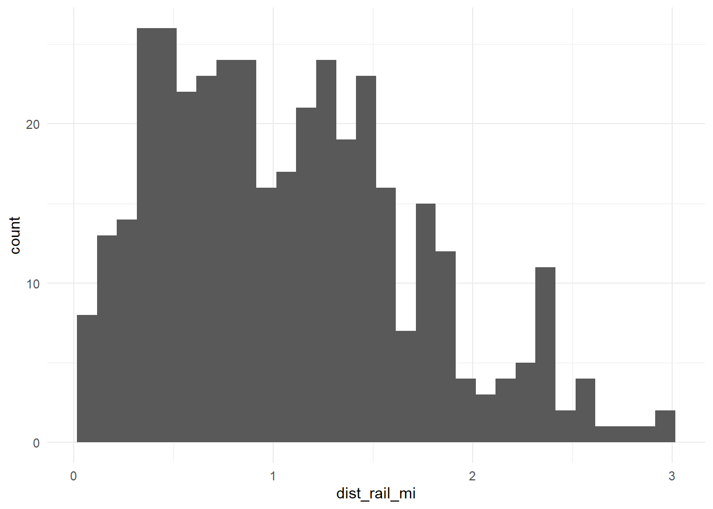
ggplot(tracts, aes(x = septa_stop_mi)) + geom_histogram(bins = 30) + theme_minimal()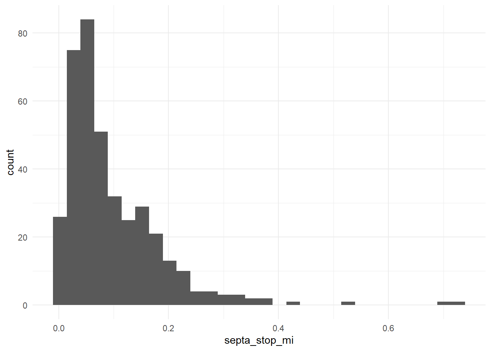
ggplot(tracts, aes(x = indego_mi)) + geom_histogram(bins = 30) + theme_minimal()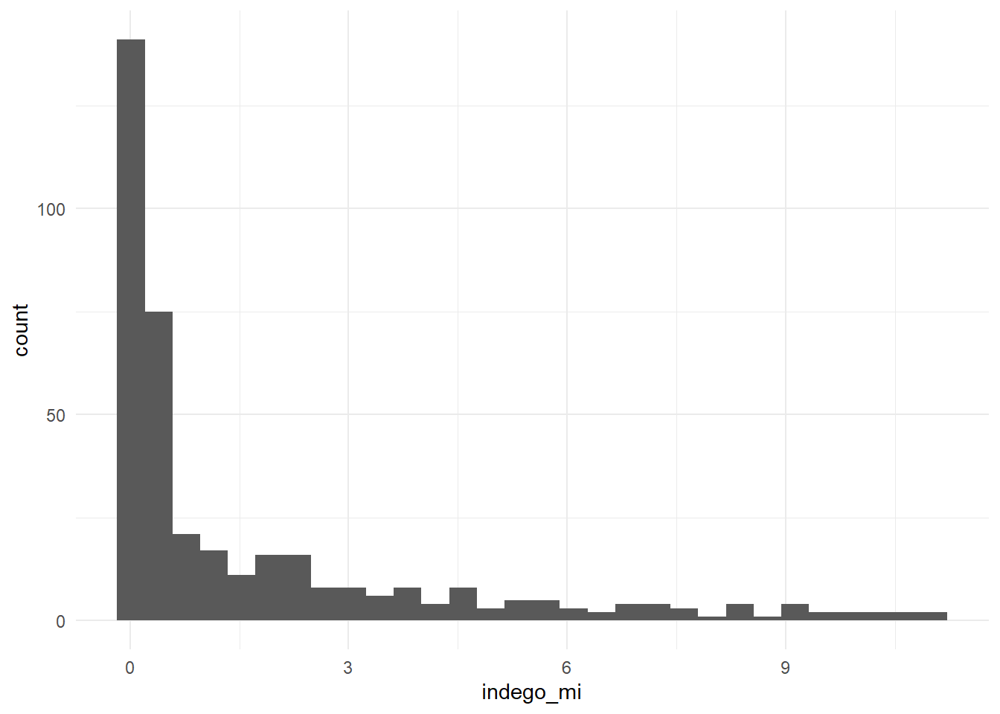
ggplot(tracts, aes(x = int_per_sqmi)) + geom_histogram(bins = 30) + theme_minimal()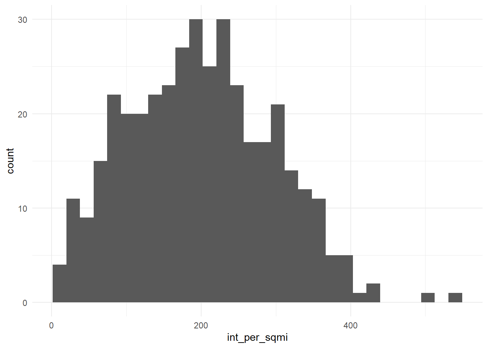
#Log septa_stop_mi
ggplot(tracts, aes(x = log1p(septa_stop_mi))) + geom_histogram(bins = 30) + theme_minimal()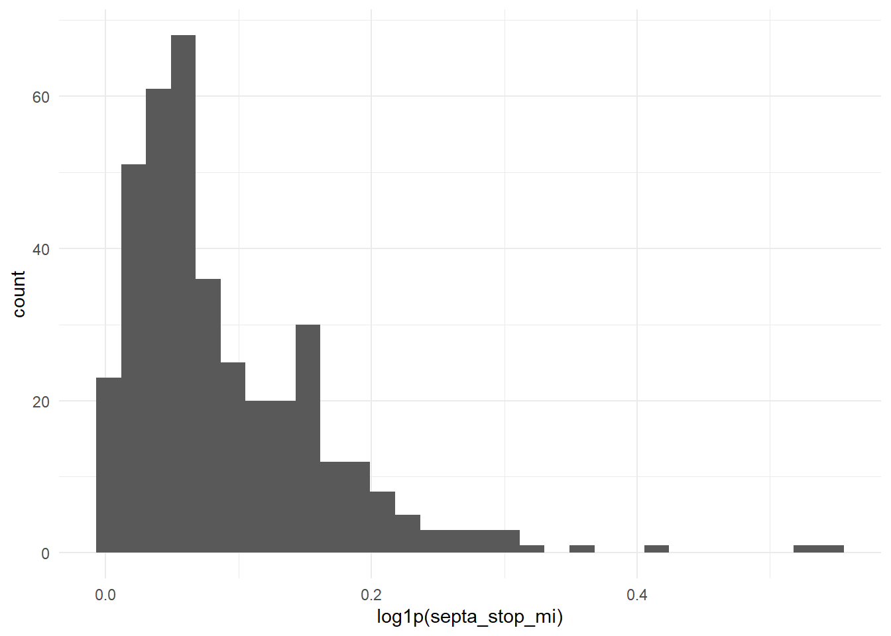
f_log1 <- y ~ medincE + pct_renter + pct_ba + pct_aloneHH + pct_under18 + log1p(septa_stop_mi)
model_log <- model_log %>%
add_row(model = "m11", added = "log of septa_stop_mi",
cv_rmse = cv_rmse(f_log1, tracts),
notes = "log of septa_stop_mi")
# Log indego_mi
ggplot(tracts, aes(x = log1p(indego_mi))) + geom_histogram(bins = 30) + theme_minimal()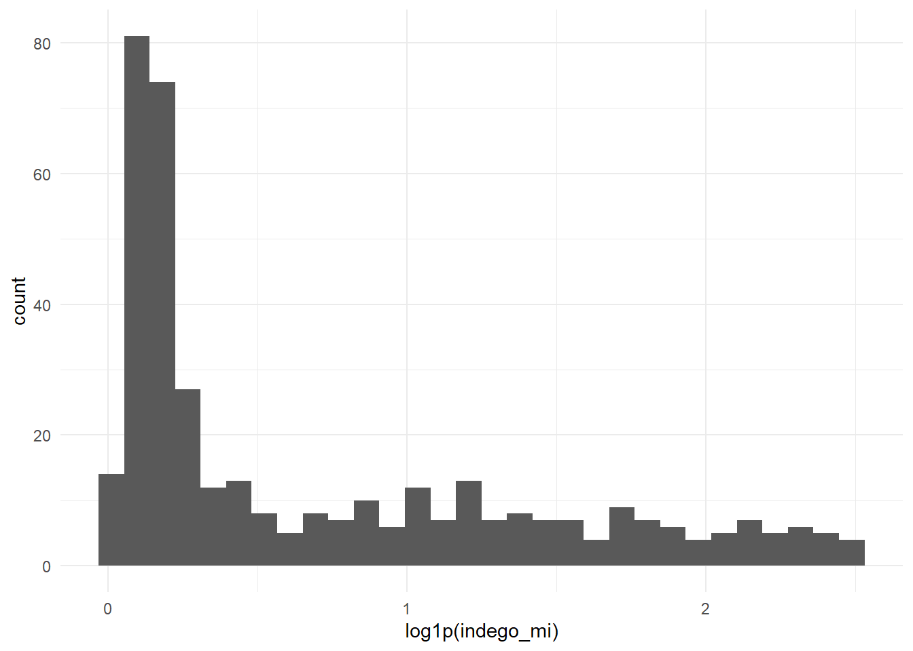
f_log2 <- y ~ medincE + pct_renter + pct_ba + pct_aloneHH + pct_under18 + log1p(indego_mi) + int_per_sqmi
model_log <- model_log %>%
add_row(model = "m12", added = "log of indego_mi",
cv_rmse = cv_rmse(f_log2, tracts),
notes = "log of indego_mi")
## Check new variables for need to square
#dist_rail_mi
ggplot(tracts, aes(x = dist_rail_mi, y = y)) + geom_point(alpha = 0.5) +
geom_smooth(method = "lm", se = FALSE) + theme_minimal()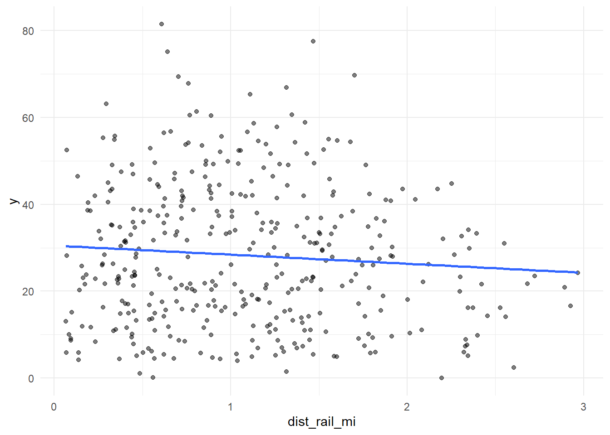
#septa_stop_mi
ggplot(tracts, aes(x = septa_stop_mi, y = y)) + geom_point(alpha = 0.5) +
geom_smooth(method = "lm", se = FALSE) + theme_minimal()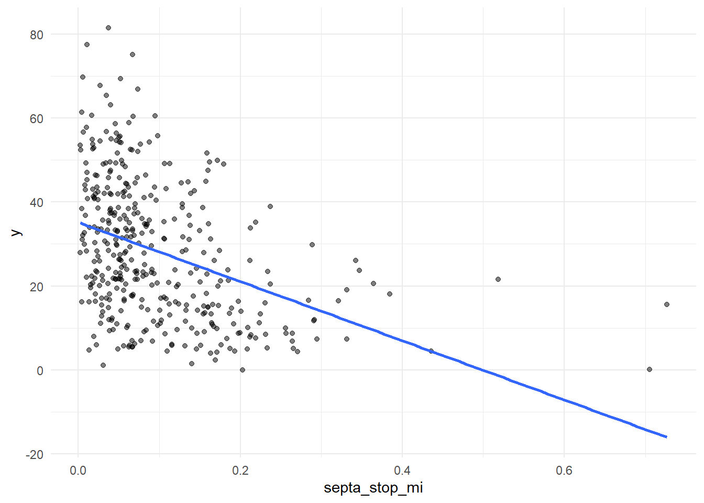
#indego_mi
ggplot(tracts, aes(x = indego_mi, y = y)) + geom_point(alpha = 0.5) +
geom_smooth(method = "lm", se = FALSE) + theme_minimal()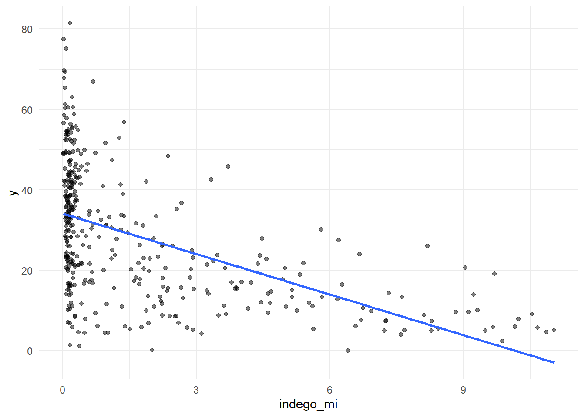
#int_per_sqmi
ggplot(tracts, aes(x = int_per_sqmi, y = y)) + geom_point(alpha = 0.5) +
geom_smooth(method = "lm", se = FALSE) + theme_minimal()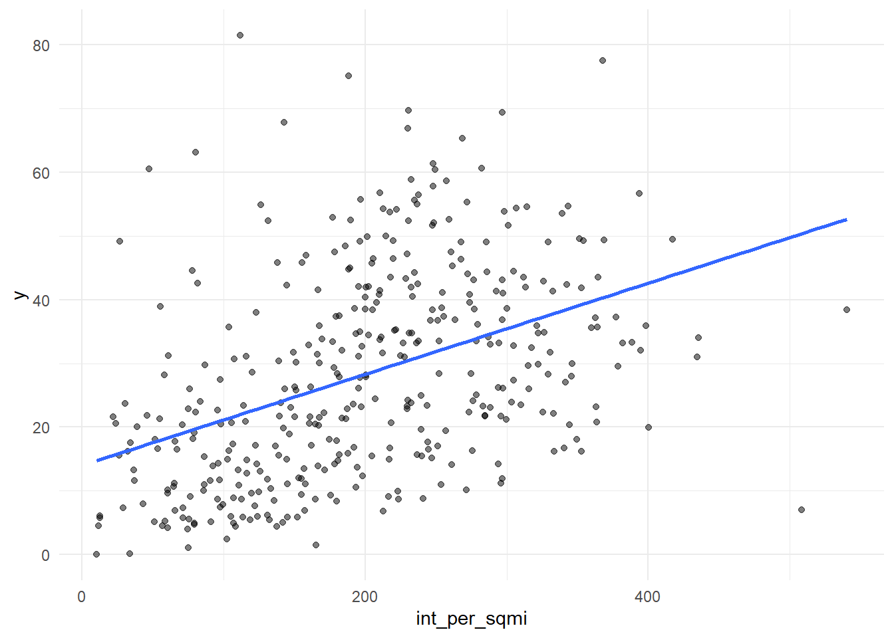
# Square int_per_sqmi
ggplot(tracts, aes(x = int_per_sqmi, y = y)) +
geom_point(alpha = 0.4) +
geom_smooth(method = "lm", formula = y ~ x + I(x^2), se = FALSE, color = "red") +
theme_minimal()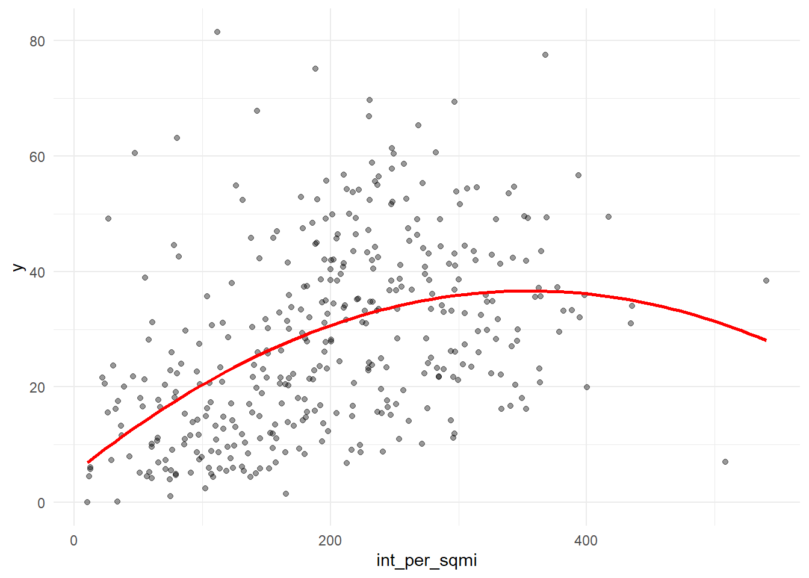
m_sq <- lm(y ~ int_per_sqmi + I(int_per_sqmi^2), data = tracts)
summary(m_sq)
Call:
lm(formula = y ~ int_per_sqmi + I(int_per_sqmi^2), data = tracts)
Residuals:
Min 1Q Median 3Q Max
-26.199 -10.894 -1.354 8.590 59.549
Coefficients:
Estimate Std. Error t value Pr(>|t|)
(Intercept) 5.102e+00 2.760e+00 1.849 0.0653 .
int_per_sqmi 1.778e-01 2.715e-02 6.549 1.85e-10 ***
I(int_per_sqmi^2) -2.505e-04 6.142e-05 -4.079 5.50e-05 ***
---
Signif. codes: 0 '***' 0.001 '**' 0.01 '*' 0.05 '.' 0.1 ' ' 1
Residual standard error: 14.54 on 385 degrees of freedom
Multiple R-squared: 0.2135, Adjusted R-squared: 0.2094
F-statistic: 52.24 on 2 and 385 DF, p-value: < 2.2e-16f_sq <- y ~ medincE + pct_renter + pct_ba + pct_aloneHH + pct_under18 + int_per_sqmi + I(int_per_sqmi^2)
model_log <- model_log %>%
add_row(model = "m13", added = "int_per_sqmi Squared",
cv_rmse = cv_rmse(f_sq, tracts),
notes = "int_per_sqmi Squared")
## Categorical of dist_rail_mi
tracts <- tracts %>%
mutate(
prox = case_when(
dist_rail_mi < 1 ~ "TOD",
dist_rail_mi < 2 ~ "Driving Distance",
TRUE ~ "Far Away"
),
ring = factor(prox, levels = c("TOD", "Driving Distance", "Far Away"))
)
tracts %>% st_drop_geometry() %>% count(prox) prox n
1 Driving Distance 160
2 Far Away 36
3 TOD 192m_cat <- lm(y ~ prox, data = tracts)
summary(m_cat)
Call:
lm(formula = y ~ prox, data = tracts)
Residuals:
Min 1Q Median 3Q Max
-29.009 -13.087 -1.191 11.862 52.245
Coefficients:
Estimate Std. Error t value Pr(>|t|)
(Intercept) 28.9661 1.2805 22.620 < 2e-16 ***
proxFar Away -8.5693 2.9879 -2.868 0.00436 **
proxTOD 0.2145 1.7339 0.124 0.90163
---
Signif. codes: 0 '***' 0.001 '**' 0.01 '*' 0.05 '.' 0.1 ' ' 1
Residual standard error: 16.2 on 385 degrees of freedom
Multiple R-squared: 0.02385, Adjusted R-squared: 0.01878
F-statistic: 4.704 on 2 and 385 DF, p-value: 0.009588f_cat <- y ~ medincE + pct_renter + pct_ba + pct_aloneHH + pct_under18 + prox
model_log <- model_log %>%
add_row(model = "m14", added = "dist_rail_mi Categorized",
cv_rmse = cv_rmse(f_cat, tracts),
notes = "dist_rail_mi Categorized")
model_log %>%
arrange(cv_rmse)# A tibble: 14 × 4
model added cv_rmse notes
<chr> <chr> <dbl> <chr>
1 m12 log of indego_mi 10.2 log of indego_mi
2 m8 Intersection Density 10.4 All Previous + Intersection Density
3 m10 m8 + m9 10.4 All Previous + Permitted Parking
4 m13 int_per_sqmi Squared 10.6 int_per_sqmi Squared
5 m7 Intersection Density 10.6 m1 + Intersection Density
6 m6 Indego Stations 10.8 All previous + Indego Stations
7 m5 Indego Stations 11.1 m1 + Indego Stations
8 m11 log of septa_stop_mi 11.5 log of septa_stop_mi
9 m3 Nearest SEPTA Stop 11.6 m1 + Nearest SEPTA Stop
10 m4 Nearest SEPTA Stop 11.6 All previous + SEPTA stops
11 m14 dist_rail_mi Categorized 12.1 dist_rail_mi Categorized
12 m1 ACS baseline 12.2 baseline
13 m2 Nearest Rail Station 12.2 m1 + Nearest Rail Station
14 m9 Permitted Parking 13.0 m1 + Permitted Parking It seems that Logging the distance to the nearest Indego station helped the most. Doing so helped it go from the 7th best model (m5) to the best (m12).
For distance to the nearest regional rail station, we divided it into 3 categories: TOD (<1 mile), Driving Distance (<2 miles), and Far Away (>2 miles). Our reference category is Driving Distance; therefore compared to Driving Distance tracts (<2 miles), Far Away tracts have 8.5 percentage point fewer households without a car, holding everything else constant. In contrast, in comparison to Driving Distance tracts, TOD tracts (<1 mile) have 0.2 percentage point more households without a car, holding everything else constant.
We combine the features and transformations that earned their place.
f_final <- y ~ medincE + pct_renter + pct_ba + pct_aloneHH + pct_under18 + log1p(indego_mi) + log1p(septa_stop_mi) + prox + int_per_sqmi + I(int_per_sqmi^2)
m_final <- lm(f_final, data = tracts)
summary(m_final)
Call:
lm(formula = f_final, data = tracts)
Residuals:
Min 1Q Median 3Q Max
-28.804 -6.521 -0.570 5.702 33.499
Coefficients:
Estimate Std. Error t value Pr(>|t|)
(Intercept) 7.725e+00 4.917e+00 1.571 0.11701
medincE -1.495e-04 4.867e-05 -3.072 0.00228 **
pct_renter 2.781e-01 3.393e-02 8.197 3.93e-15 ***
pct_ba -6.660e-02 4.526e-02 -1.472 0.14195
pct_aloneHH 2.885e-01 5.545e-02 5.202 3.24e-07 ***
pct_under18 7.406e-02 8.417e-02 0.880 0.37947
log1p(indego_mi) -5.926e+00 1.015e+00 -5.841 1.12e-08 ***
log1p(septa_stop_mi) -1.193e+01 8.280e+00 -1.441 0.15054
proxFar Away -3.533e+00 1.896e+00 -1.864 0.06317 .
proxTOD -1.060e+00 1.152e+00 -0.921 0.35782
int_per_sqmi 6.197e-02 2.199e-02 2.819 0.00508 **
I(int_per_sqmi^2) -6.323e-05 4.681e-05 -1.351 0.17761
---
Signif. codes: 0 '***' 0.001 '**' 0.01 '*' 0.05 '.' 0.1 ' ' 1
Residual standard error: 10.07 on 376 degrees of freedom
Multiple R-squared: 0.6319, Adjusted R-squared: 0.6211
F-statistic: 58.67 on 11 and 376 DF, p-value: < 2.2e-16model_log <- model_log %>%
add_row(model = "final", added = "Logged, Category, and Squred",
cv_rmse = cv_rmse(f_final, tracts),
notes = "Logged, Category, and Squred")
model_log %>%
arrange(cv_rmse)# A tibble: 15 × 4
model added cv_rmse notes
<chr> <chr> <dbl> <chr>
1 final Logged, Category, and Squred 10.2 Logged, Category, and Squred
2 m12 log of indego_mi 10.2 log of indego_mi
3 m8 Intersection Density 10.4 All Previous + Intersection Densi…
4 m10 m8 + m9 10.4 All Previous + Permitted Parking
5 m13 int_per_sqmi Squared 10.6 int_per_sqmi Squared
6 m7 Intersection Density 10.6 m1 + Intersection Density
7 m6 Indego Stations 10.8 All previous + Indego Stations
8 m5 Indego Stations 11.1 m1 + Indego Stations
9 m11 log of septa_stop_mi 11.5 log of septa_stop_mi
10 m3 Nearest SEPTA Stop 11.6 m1 + Nearest SEPTA Stop
11 m4 Nearest SEPTA Stop 11.6 All previous + SEPTA stops
12 m14 dist_rail_mi Categorized 12.1 dist_rail_mi Categorized
13 m1 ACS baseline 12.2 baseline
14 m2 Nearest Rail Station 12.2 m1 + Nearest Rail Station
15 m9 Permitted Parking 13.0 m1 + Permitted Parking tracts <- tracts %>% mutate(resid_final = residuals(m_final))
#Final Model
ggplot(tracts) +
geom_sf(aes(fill = resid_final), color = NA) +
scale_fill_gradient2(low = "#2166ac", mid = "grey95", high = "#b2182b", midpoint = 0) +
theme_void() +
labs(title = "Final model: where it's wrong",
subtitle = "Red = actual higher than predicted",
fill = "Residual")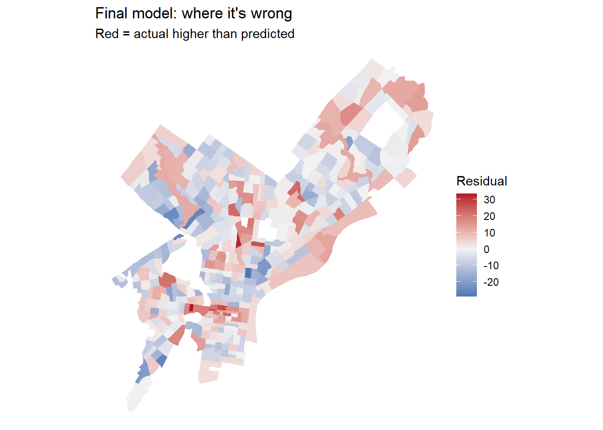
#Original Model
ggplot(tracts) +
geom_sf(aes(fill = resid_m1), color = NA) +
scale_fill_gradient2(low = "#2166ac", mid = "grey95", high = "#b2182b", midpoint = 0) +
theme_void() +
labs(title = "Baseline model: where it's wrong",
subtitle = "Red = actual higher than predicted",
fill = "Residual")
Putting the final model and original model residuals maps side-by-side, we can see some drastic changes, but also some continuity. First, the clusters around Center City and North Philadelphia seemed to have shrunk, but not disappeared completely. On the other hand, we seem to have flipped our issue in the Northwest and Northeast. Whereas before we were over-predicting, now we are under-predicting. Otherwise, tracts seem to have flipped almost randomly from over- to under-predicting or vice versa.
ggplot(tracts, aes(x = y_cv, y = abs(resid_final))) +
geom_point(alpha = 0.5) +
geom_smooth(se = FALSE) +
labs(x = "CV of your outcome estimate (%)", y = "Size of the miss") +
theme_minimal()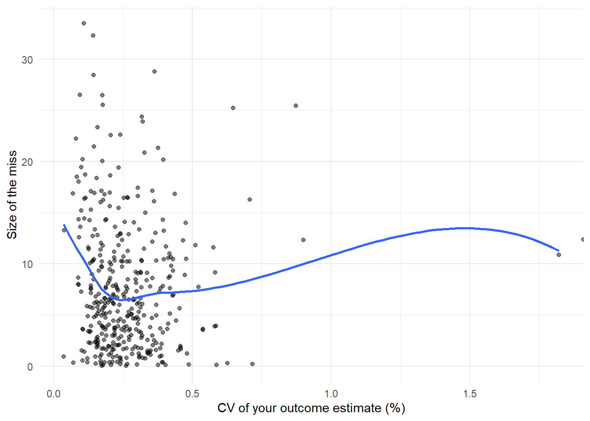
Answer in prose, drawing on your model log (incorporate our words of the day for bonus points. just kidding):
I was disappointed by the negative and negligible impact of permitting parking. I had hopes that this could be used as a subtle indicator of ease of car usage. While its impact was subtle, the fact that it ultimately detracted from the RMSE led me to drop it. I suspect that this ended up not being a good variable as people are not truly disinventized from owning a car purely because there are few parking permits available in their area; in other words, the need to own a car can far outpace the hassle of needing to park it.
I was also disappointed by the impact of squaring density of intersections. While it worked well as a linear function, it did appear to have a small flattening out on the end, which led me to square it. However, the squared version actually performed worse than the original.
For the logged distance to the nearest Indego station, we can see that for every 1% increase in distance to a station (β̂), there predicated 0.0677 decrease in percent of households without a car, holding everything else constant.
We think one key aspect that is still missing is demographic information. Race/ethnicity could also play a major role in these areas in determining the likelihood for a household to own a car.
Given that there are continued instances of spatial autocorrelation, we are skeptical that these are indeed statistical noise. Rather, they are probably some further spatial factor that we yet to account for.